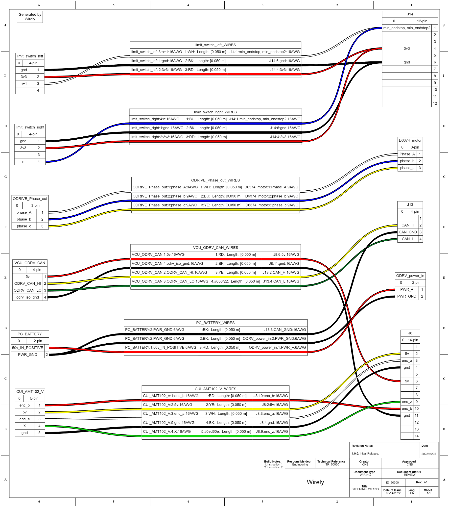
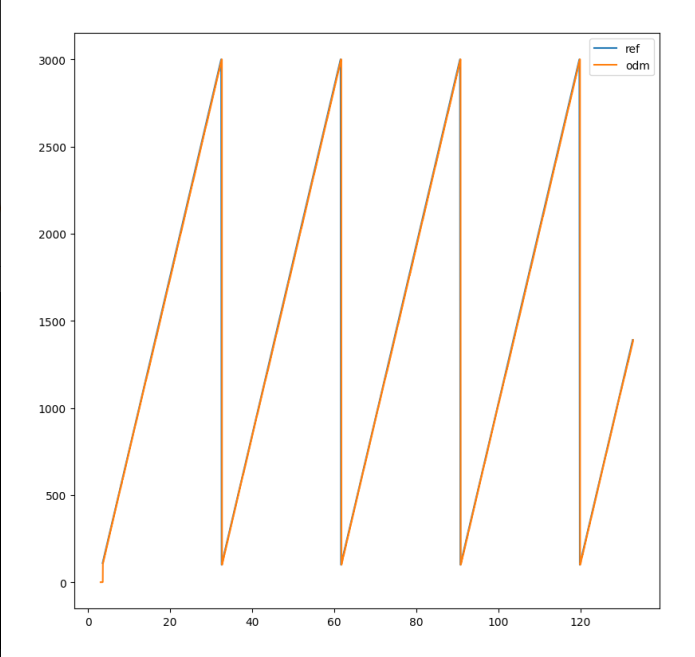
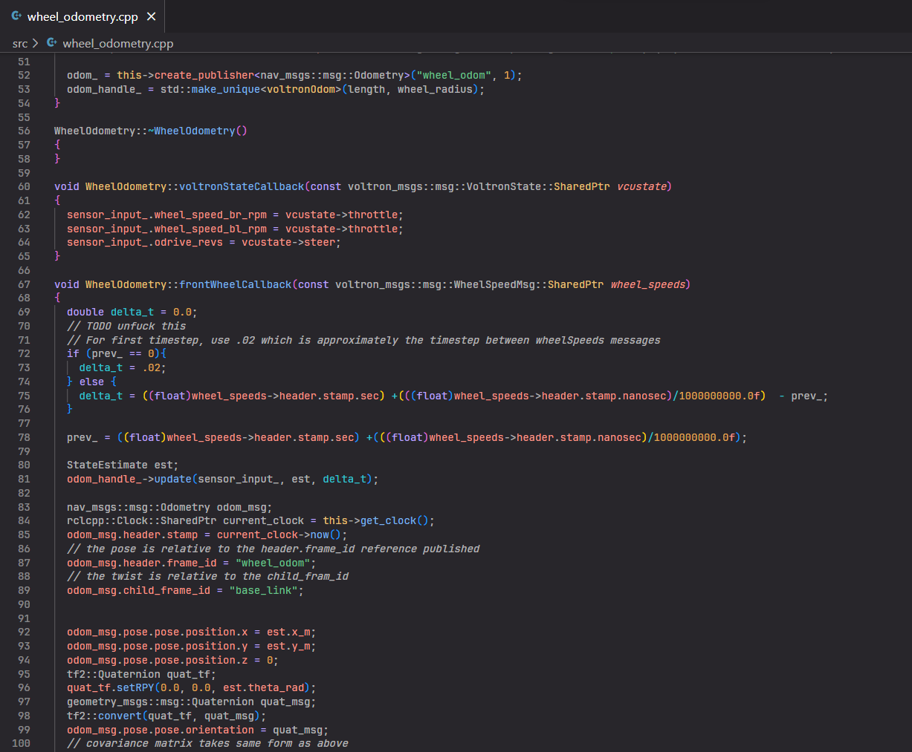
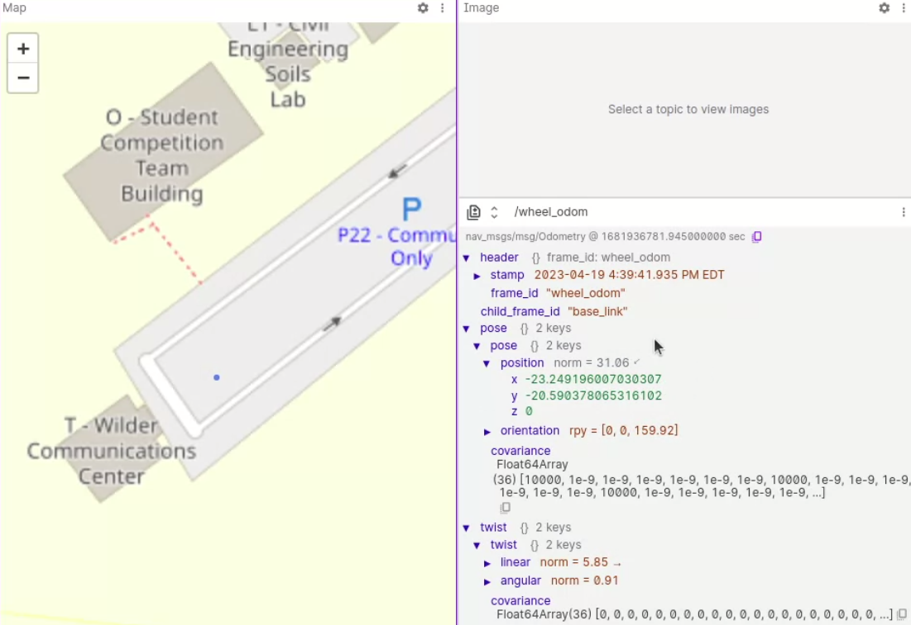
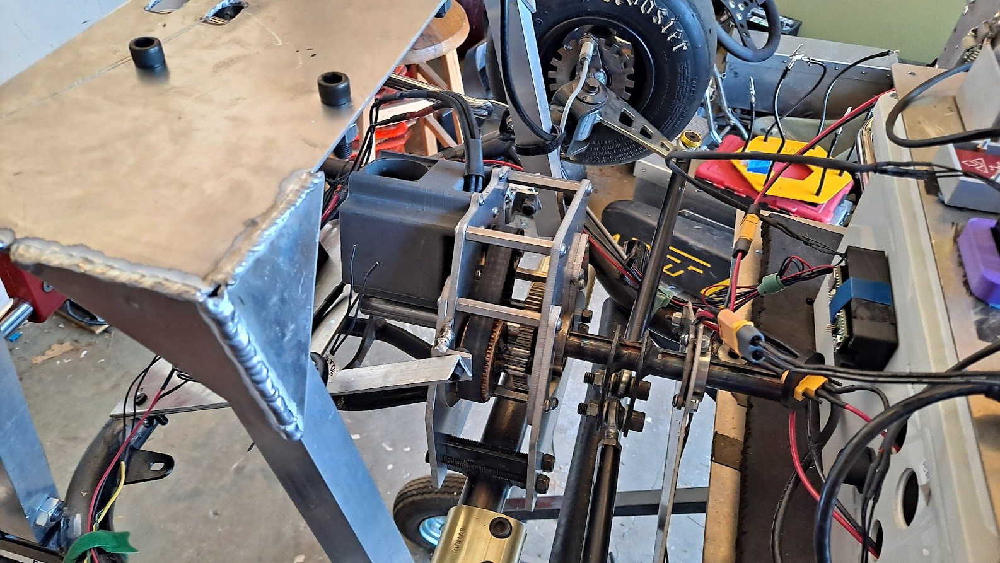
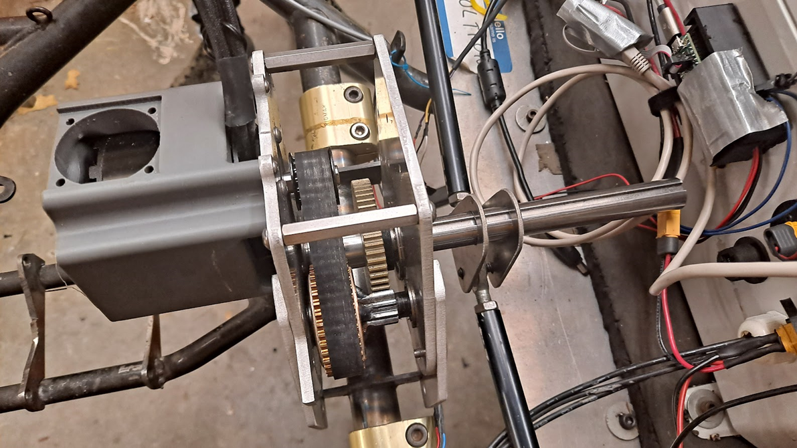
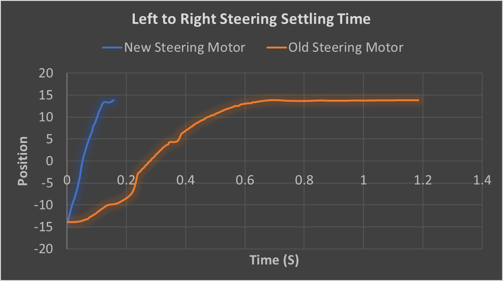
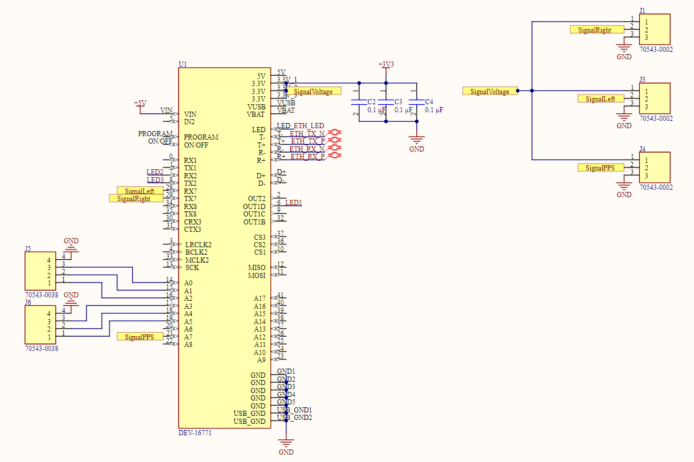

Project Overview
Voltron V3 renovated a multi-generation autonomous racing platform made up of sensors, actuators, custom software and electrical subsystems. The team upgraded the electro-mechanical steering system, integrated a higher-resolution Ouster OS0 LiDAR and OAK-D Pro depth camera, and developed wheel odometry to improve state estimation.
My Contributions
- Conducted software experimentation and testing to verify vehicle systems were operating as intended.
- Developed the appearance and functionality of the kart's HMI/GUI using Python.
- Contributed to odometry development in C++ and ROS2, including wheel-odometry mathematics.
- Supported debugging, integration and vehicle-level testing of the autonomous system.
Measured Results
The upgraded steering system averaged approximately 0.166 s settling time versus 1.187 s for the original system. The redesigned gearbox reduced unwanted output-shaft displacement from 4.5° to 2.1°. Road-test data also demonstrated usable wheel-odometry results over a short time horizon at the targeted 100 Hz publication rate.
Odometry & ROS2
The wheel-speed system used Hall-effect gear-tooth sensors and a Teensy microcontroller. The team addressed noisy wheel-speed measurements with filtering/debouncing and implemented a kinematic model to estimate vehicle position. ROS2 code was debugged and deployed in Voltron's system environment and validated using recorded road-test data.




Steering & Electromechanical Integration
The steering system was redesigned around a more powerful BLDC motor, ODrive controller and belt-driven gearbox. Testing emphasized settling time, repeatability and backlash reduction, while electrical work included motor-controller, encoder, CAN and power integration.




Project Documents
The original project materials are preserved here as supporting engineering documentation.